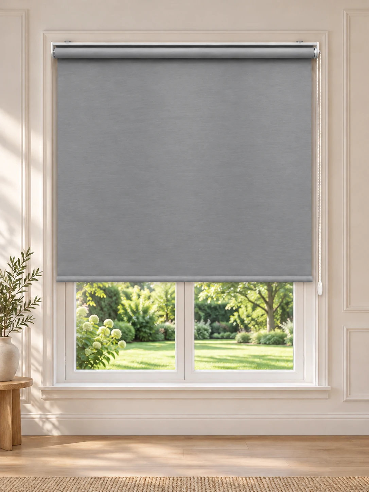
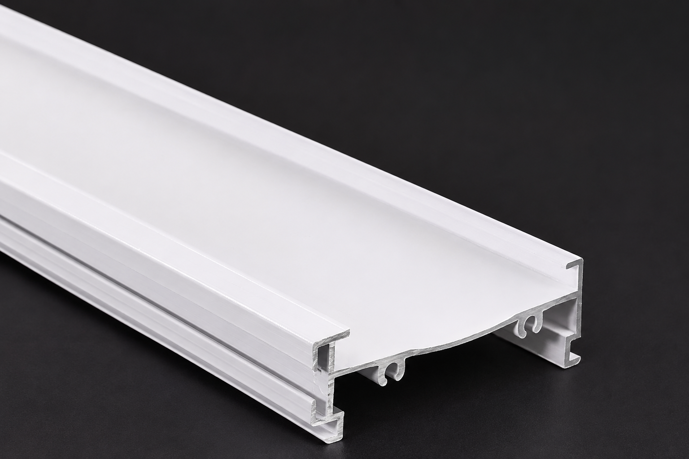

İthal Mat Stor Ultra Kalın Gri Perde
İthal ultra kalın mat stor kumaş, zarif gri renk ve ölçüye özel üretim.
Premium kalın kumaş ile ışığı azaltan, tok duruşlu gri mat stor perde.

Sepet demo olarak çalışır. Ödeme ve sipariş altyapısı henüz aktif değildir.
Ürün Açıklaması
Perde Konağı İthal Mat Stor Ultra Kalın Gri Perde | Premium Kalınlık | Özel Ölçü
Perde Konağı İthal Mat Stor Perde, premium kalın kumaş yapısı, modern görünümü ve zarif gri rengiyle yaşam alanlarınıza şıklık ve konfor kazandırır. Özel dokulu ithal kumaşı sayesinde standart stor perdelere göre daha tok ve dolgun bir duruş sunar.
Gri renginin sade ve doğal tonuyla salon, yatak odası, mutfak, ofis ve çalışma alanlarında dekorasyonunuza uyum sağlar.
✨ Öne Çıkan Özellikler
- İthal Premium Kumaş: Yüksek kaliteli, ultra kalın mat stor kumaştan üretilmiştir.
- Tok ve Dolgun Duruş: Kalın kumaş yapısıyla pencerelerde düzgün ve estetik bir görünüm oluşturur.
- Işık Kontrolü: Yoğun dokusu sayesinde dışarıdan gelen gün ışığını azaltarak daha konforlu bir ortam oluşturur.
- Mahremiyet: Kapalı konumdayken dışarıdan içerinin görünmesini azaltmaya yardımcı olur.
- Modern Gri Rengi: Sade, sıcak ve zamansız görünümüyle farklı dekorasyon tarzlarına uyum sağlar.
- Kolay Kullanım: Zincirli mekanizması sayesinde perdeyi istediğiniz seviyeye kolayca ayarlayabilirsiniz.
- Özel Ölçü Üretim: Siparişiniz seçtiğiniz en ve boy ölçülerine göre özenle hazırlanır.
📏 Ölçü ve Sipariş Bilgilendirmesi
Perdelerimiz, müşterilerimizin tercih ettiği ölçülere göre özel olarak üretilmektedir.
- Sipariş vermeden önce pencerenizin en ve boy ölçülerini dikkatlice belirleyiniz.
- Ölçü tablosunda istediğiniz ölçü bulunmuyorsa en yakın uygun ölçüyü seçerek gerçek ölçülerinizi sipariş notunda belirtiniz.
- Zincir yönünü sağ veya sol olarak belirtebilirsiniz.
- Ürününüz seçtiğiniz ölçülere göre hazırlanarak gönderilir.
🏡 Kullanım Alanları
Salon, yatak odası, çocuk odası, mutfak, ofis, toplantı odası ve iş yerleri için ideal bir tercihtir.
⭐ Neden Perde Konağı?
Perde Konağı olarak kaliteli kumaşı, özenli üretimi ve estetik tasarımı bir araya getiriyoruz. Her perdeyi siparişinize özel hazırlayarak yaşam alanlarınıza uygun, uzun ömürlü ve kullanışlı çözümler sunmayı hedefliyoruz.
Perde Konağı İthal Mat Stor Ultra Kalın Gri Perde ile pencerelerinize premium bir dokunuş katın!